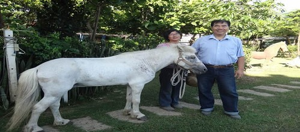
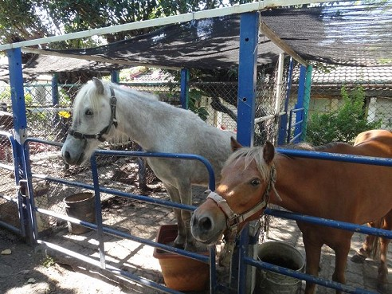
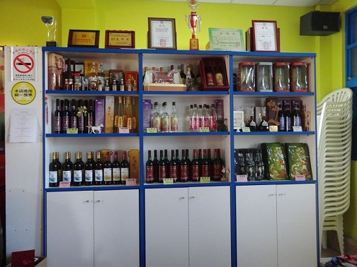
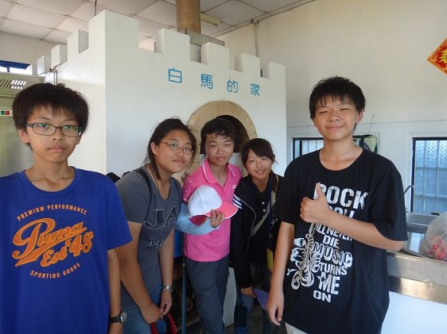
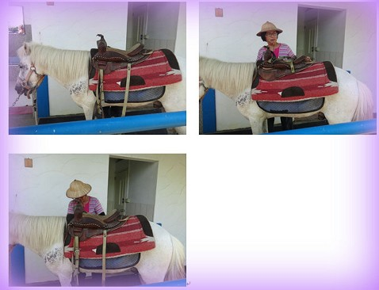
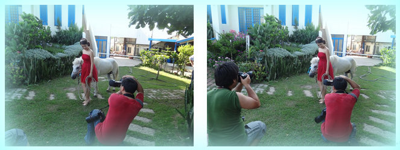
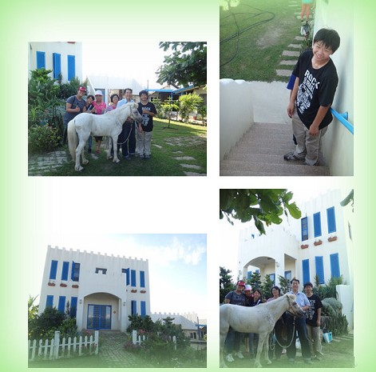

林家馬場，於1988年成立，以養殖迷你馬為主，而小朋
友來到這就可以騎馬、餵馬，之後為了要因應加入WTO還有在假日的時候會有民眾來遊玩所以就慢慢的轉型成休閒觀光業，到了2002年，改成了白馬休閒酒
莊，以生產養生、天然、不添加香料的再製酒為主，還利用以前製作鴨蛋或鹹鴨蛋的加工技術提供來此地遊玩的名眾，自己DIY，試著做出一好吃的鹹鴨蛋
以前林老闆和老闆娘都騎著一群馬到彰濱工業區散步，因為老闆他喜歡飼養動物，所以才會養這麼多動物。

這裡是製造酒的地方。

這裡是讓人可以做DIY的地方，他們現在有新的窯烤披薩。

 準備馬鞍中
 巧遇拍照
 合照
心得分享:
這次去了白馬酒莊，雖然這不再頂庄村內，不過，還是被組長叫來了，來到這裡老闆娘很熱情的招待我們，由於林董事長還沒回來，所以就讓我們到處看看，當林董事長回來時，我們就到了小型會議室，訪問林董事長之後，他還很慷慨地讓我們騎馬，我覺得真的是很開心。
|